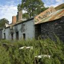
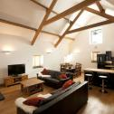
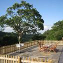

About Tyddyn Tyfod
Originally an old barn, Tyddyn Tyfod has recently been renovated to an excellent standard (completed in spring 2009). It has the charm of a well aged building with the décor, style and comfort of a modern house.
The cottage consists of a double height living space, four bedrooms (sleeps 7), beautifully furnished and decorated, along with two bathrooms (one en-suite), and cosy snug for reading and relaxing on colder days.
{kind=link}
Set in 3 acres with views across the rolling countryside, it is 6 miles from Corwen, 8 miles from Bala, 17 miles from Llangollen and on the edge of the Snowdonia National Park. Tyddyn Tyfod is the ideal location if you're looking to get away from it all!
Accommodation
{kind=link}
- Furnished and equipped to very high standards, the accommodation centers around a double height living space with open plan kitchen, dining and relaxing space, leading out to the verandah.
- Fully equipped modern kitchen with top of the range Siemens appliances incl. washing machine, dishwasher, fridge freezer, microwave, electric oven and induction hob.
- Multi media entertainment system including flat screen TV with Freesat digital, Playstation games console with DVD and CD player (selection of DVDs) as well as I-Pod docking station.
- Sleeping accommodation comprises a king size room with en-suite, two large twins (beds can be zipped together to make super king size beds as required) and a single.
- Solid oak flooring with underfloor heating throughout.
- Wood burning fire with pizza oven (first bag of logs included in rental).
- Cot (not bedding), highchair and stair gate available.
- A family bathroom with large bath and separate shower.
- Stable door leading out onto...
Outside
{kind=link}
- Fully enclosed fenced patio area.
- Table and chairs for outside dining.
- Large barbecue.
- Fire pit.
- Large lawned garden.
- Gravel car parking.
Arrival and Departure
- Check in times are from 4:00PM onwards on the day of arrival.
- Guests are asked to vacate the cottage by 11:00AM on the day of departure.
- Week long stays commence on Saturday.
Other information
- Tyddyn Tyfod is easy to get to (on the A5, the former London to Holyhead road, we are 35 miles from Chester and 95 miles from Birmingham). If you do decide to leave the comfort of the house and garden then some of Wales' most beautiful areas are easily accessible. There are some beautiful walks form the front door or you can venture a bit further to enjoy the delights that Snowdon and the surrounding areas have to offer.
- Local Maps and Information supplied.
- Duvets with linen and towels (bath and hand) included.
- Sorry, no pets.
- No smoking in the property.
- The cottage is in a remote spot accessed via a long country track through two farm gates, which is steep in places, care should be taken when driving.